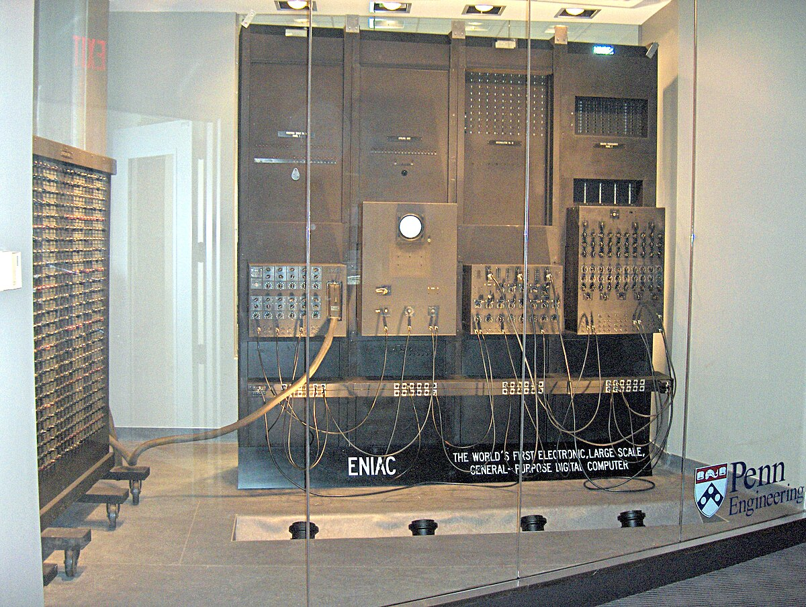

超级计算机史 1930 — 今天
速度从来不是
一台机器的独角戏。
从齿轮、真空管到百亿亿次，
看看人们怎样把难题拆开，
再交给机器一段段算完。
32 节历史线索 · 4 段叙事 · 约 32 分钟阅读
1946 · ENIAC / 第一代电子计算
ENIAC 把弹道计算从纸张和人工步骤推进到电子脉冲的速度。

从连续运动，到并行网络档案已经打开 · 按目录挑一段读
导言
1930—今天 / 总览
在“超级”这个词出现之前，计算先学会成为机器。
工程师先用齿轮、积分轮和继电器模拟方程，再把真空管接成能够连续工作的电路。差分分析机、Z3 与 ENIAC 的路线不同，却都在回答同一件事：怎样表示问题，怎样让步骤稳定重复。
战争把弹道、雷达、密码和工程设计推到时间边界。机器还远没有今天的通用性，却已经让“算得更快”成为一项需要硬件、程序和操作员共同承担的工作。